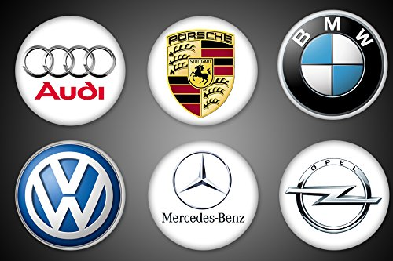

Otomotiv Sektörü
Dünyanın en büyük otomotiv sanayilerinden birisine sahip olan Almanya; Çin, ABD ve Japonya’nın ardından dünyanın en büyük dördüncü otomotiv üreticisidir. 1999 yılından bu yana kişi başına düşen araç sayısı her geçen yıl artış kaydeden Almanya, OICA verilerine göre 2015 yılı itibariyle 48,5 milyon adetlik araç parkına ulaşmıştır. Almanya’da her bin kişiye düşen motorlu araç sayısı da 593’tür. Almanya kişi başına düşen binek otomobil sayısının dünyada en yüksek olduğu ülkelerden birisidir
Almanya açık ara Avrupa’nın en büyük motorlu araç üreticisi konumunda yer almaktadır. Ülkede üretim maliyetleri oldukça yüksek olmasına rağmen, Almanya’nın otomotiv endüstrisindeki üretim liderliği rakipsiz şekilde devam etmektedir.
Almanya aynı zamanda dünyanın dördüncü büyük motorlu taşıt üreticisi konumunda yer almaktadır. Ülkenin motorlu araç üretimi 2016 yılında 6 milyon adedin üzerine çıkmıştır. 2017 yılında da Almanya’nın motorlu araç üretiminin düşük oranda da olsa artarak 6.2 milyon adede ulaşması beklenmektedir.